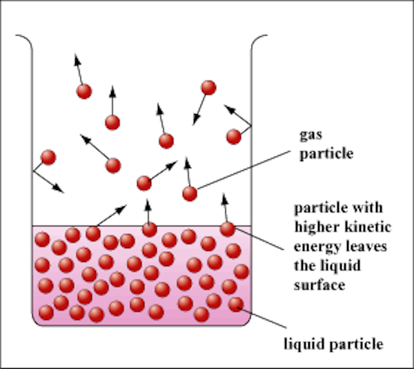
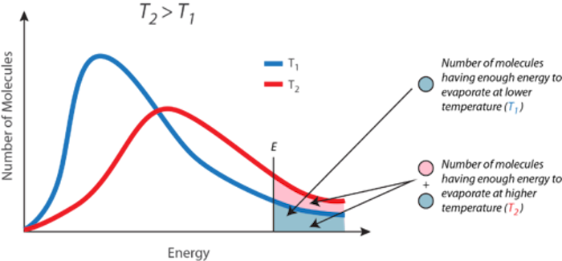
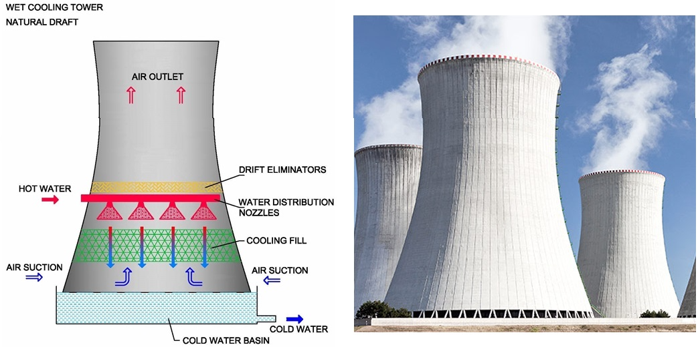
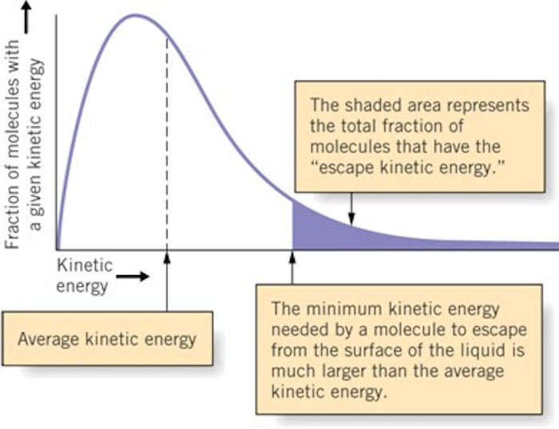
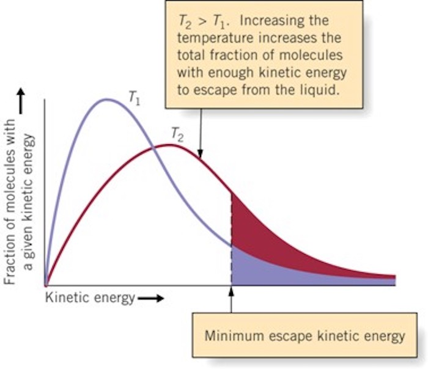
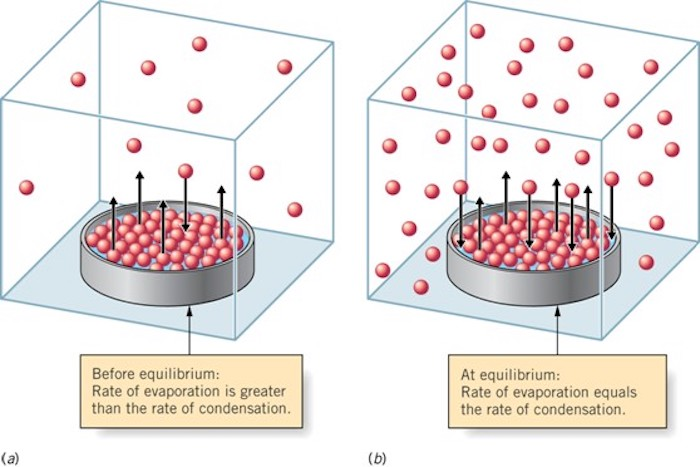
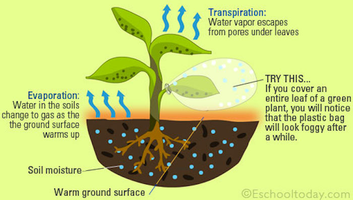
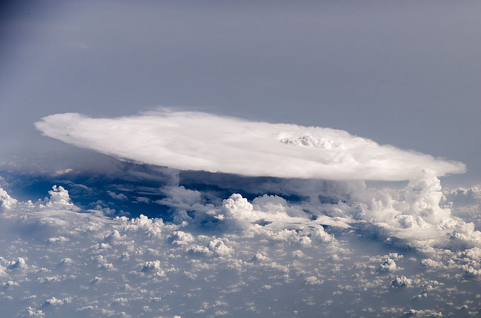

A key aspect of the hydrologic cycle is the fact that it is driven by energy inputs (primarily from the sun). At the global scale, the system is essentially closed with respect to water; negligible water is entering or leaving the system. In other words, there is no external forcing in terms of a water flux. Systems with no external forcing will generally eventually come to an equilibrium state. So what makes the hydrologic cycle so dynamic? The solar radiative energy input, which is external to the system, drives the hydrologic cycle. Averaged over the globe, 342 W m\(^{-2}\) of solar radiative energy is being continuously input to the system at the top of the atmosphere. This energy input must be dissipated, and this is done, to a large extent, via the hydrologic cycle. Due to this fact, the study of hydrology is not isolated to the study of water storage and movement, but also must often include study of energy storage and movements.
1.6 Components of the water cycle
1.6.1 Water storage in oceans
1.6.2 Evaporation / Sublimation
Evaporation \(\longrightarrow\) cooling



  
1.6.3 Evapotranspiration

1.6.4 Water storage in the atmosphere
Cumulonimbus cloud over Africa 
Picture of cumulonimbus taken from the International Space Station, over western Africa near the Senegal-Mali border.
If all of the water in the atmosphere rained down at once, it would only cover the globe to a depth of 2.5 centimeters. \[
\begin{align}
\text{amount of water in the atmosphere} & \qquad V = 12\, 900\, \text{km}^3 \\
\text{surface of Earth} & \qquad S = 4 \pi R^2;\quad R=6371\,\text{km}\\
& \qquad V = S \times h \\
\text{height} & \qquad h = \frac{V}{S} \simeq 2.5\,\text{cm}
\end{align}
\]
Try to calculate this yourself, and click on the button below to check how to do it.
Show/hide the code
# amount of water in the atmosphereV =12900# km^3# Earth's radiusR =6371# km# surface of Earth = 4 pi Rˆ2S =4*3.141592* R**2# Volume: V = S * h, therefore# heighth = V / S # in kmh_cm = h *1e5# in cmprint(f"The height would be ~ {h_cm:.1f} cm")